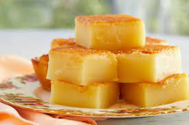

Butter Mochi

Description
A decadent delight! A Japanese-Hawaiian fusion meant to be! Beware contains coconuts!
Ingredients
- 1 box (16oz/450g) Mochiko Flour (sweet glutinous rice flour)
- 2 cups (16oz/454g) granulated sugar
- 1 teaspoon baking powder
- 4 large eggs (room temperature)
- 2 cups (16floz/450ml) whole milk
- 1 can (13floz/400ml) coconut milk
- ¾ cup (6oz/170g) butter softened
- 2 teaspoons vanilla extract
Steps
- Preheat the oven to 350°F (180°C). Butter a 9x13-inch (23x33cm) baking pan and line with parchment paper.
- In a large bowl mix together the sweet rice flour, sugar and baking powder.
- Add in the eggs, followed by the milk, coconut milk, butter and vanilla. Using an electric mixer or by hand whisk together to form a smooth batter. Pour mix into your prepared pan.
- Bake for 50-60 minutes or until golden on top. Set aside to cool down completely.
- Cut into 24 squares with a sharp knife. Store in an airtight container at room temperature for up to 2 days. Serve warm with whipped cream or vanilla ice-cream if desired.
Source/Reference
Original Recipe from...
Go back!